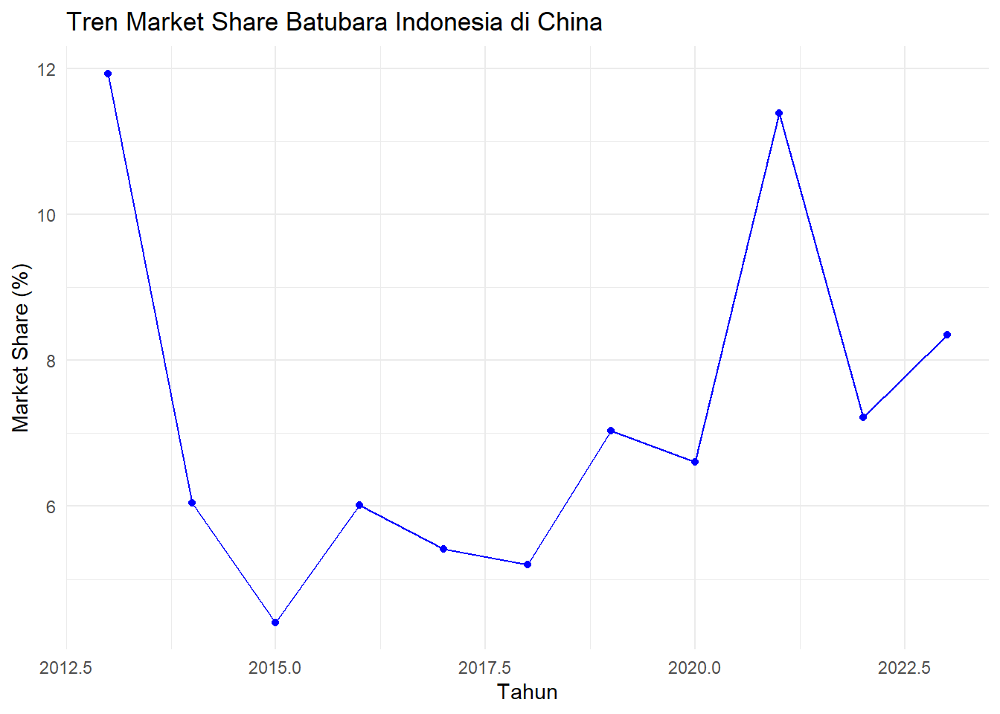
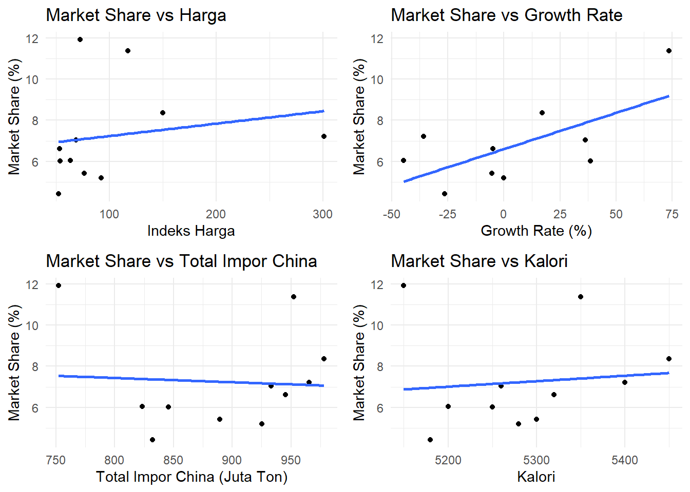
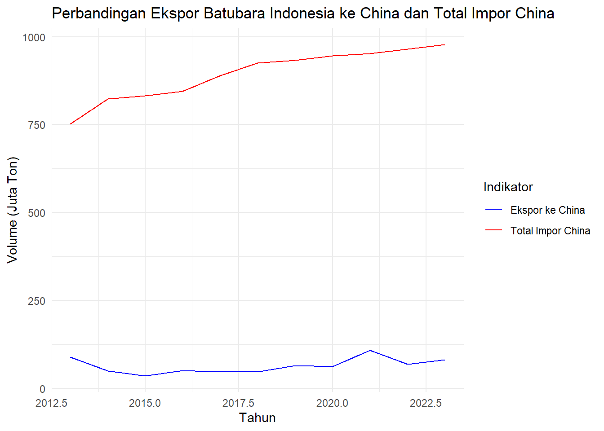

library(tidyverse)
library(ggplot2)
library(lmtest)
library(car)
library(stargazer)
library(gridExtra)
library(kableExtra)Analisis Determinan Daya Saing Ekspor Batubara Indonesia ke China: Studi Kasus Periode 2013-2023
Metode Penelitian Politeknik APP Jakarta

1 Pendahuluan
1.1 Latar belakang
Indonesia merupakan salah satu produsen dan eksportir batubara terbesar di dunia dengan kontribusi signifikan terhadap perdagangan global. Dengan cadangan batubara yang besar dan kualitas yang beragam, Indonesia memiliki keunggulan komparatif dalam industri ini, terutama dalam memasok kebutuhan energi ke negara-negara Asia seperti China, India, Jepang, dan Korea Selatan.
Dalam konteks perekonomian global yang semakin terintegrasi, daya saing ekspor batubara Indonesia dipengaruhi oleh berbagai faktor. Harga batubara global, sebagai indikator penting, mencerminkan dinamika pasar dan mempengaruhi keputusan perdagangan. Kualitas batubara yang diukur melalui nilai kalori juga menjadi pertimbangan utama bagi negara importir dalam memilih pemasok. Sementara itu, total permintaan dari negara-negara tujuan utama ekspor menggambarkan potensi pasar dan kapasitas penyerapan.
China, sebagai negara dengan tingkat konsumsi energi yang sangat tinggi, telah menjadi pasar utama bagi ekspor batubara Indonesia. Permintaan batubara dari China terus meningkat seiring dengan pertumbuhan ekonominya yang pesat, urbanisasi, dan industrialisasi yang berkelanjutan. Dalam hal ini, posisi Indonesia sebagai pemasok utama batubara ke China mencerminkan hubungan perdagangan yang kuat antara kedua negara. Keterlibatan Indonesia dalam memenuhi kebutuhan energi China juga tidak terlepas dari peran batubara sebagai sumber energi yang mendominasi dalam bauran energi China, meskipun negara tersebut mulai beralih ke energi terbarukan secara bertahap.
Daya saing ekspor batubara Indonesia ke China dipengaruhi oleh sejumlah faktor penting, termasuk harga batubara global yang fluktuatif, kualitas batubara yang diukur melalui nilai kalori, dan kapasitas penyerapan pasar di China. Harga batubara global, yang sering kali dipengaruhi oleh dinamika permintaan dan penawaran internasional, berperan besar dalam menentukan volume ekspor. Kualitas batubara menjadi faktor lain yang tidak kalah penting, karena China cenderung mengimpor batubara dengan spesifikasi tertentu yang sesuai dengan kebutuhan industrinya. Selain itu, kebijakan energi China, termasuk pembatasan impor dan peraturan lingkungan, turut memengaruhi pola perdagangan batubara dengan Indonesia.
Melalui penelitian ini, diharapkan dapat diperoleh pemahaman yang lebih mendalam mengenai daya saing ekspor batubara Indonesia ke China. Fokus penelitian mencakup pengaruh harga batubara, kualitas (kalori), dan total permintaan dari China terhadap volume ekspor. Analisis ini juga bertujuan untuk mengevaluasi posisi kompetitif Indonesia di pasar batubara China, memberikan wawasan yang dapat mendukung pengambilan kebijakan strategis di sektor energi dan perdagangan internasional.
1.2 Ruang lingkup
Ruang Lingkup Penelitian
Penelitian ini difokuskan pada analisis daya saing ekspor batubara Indonesia ke negara tujuan utama (China) 2013-2023. Data yang digunakan mencakup volume ekspor batubara Indonesia dari Badan Pusat Statistik dan Kementerian ESDM, serta data total impor batubara tujuan dari sumber resmi seperti China Customs Statistics dan UN Comtrade.
Variabel yang dianalisis meliputi:
Variabel Dependen: Market Share (rasio volume ekspor Indonesia terhadap total impor negara tujuan)
Variabel Independen:
Harga batubara global (USD/ton)
Kualitas batubara (nilai kalori kcal/kg)
Total permintaan (jumlah impor negara tujuan)
Growth rate ekspor Indonesia
Menggunakan analisis regresi dan visualisasi data, penelitian bertujuan mengidentifikasi faktor-faktor yang mempengaruhi daya saing ekspor batubara Indonesia di pasar China.
1.3 Rumusan masalah
Berdasarkan latar belakang yang telah dipaparkan, rumusan masalah penelitian adalah sebagai berikut:
Bagaimana pengaruh harga batubara global terhadap market share ekspor batubara Indonesia ke China periode 2013-2023?
Bagaimana pengaruh kualitas batubara (nilai kalori) terhadap market share ekspor batubara Indonesia ke negara tujuan utama?
Apakah total permintaan dari negara tujuan memiliki pengaruh signifikan terhadap daya saing ekspor batubara Indonesia?
Bagaimana pengaruh growth rate ekspor terhadap posisi kompetitif Indonesia di pasar batubara global?
1.4 Tujuan dan manfaat penelitian
Berdasarkan latar belakang dan rumusan masalah, tujuan penelitian ini adalah menganalisis faktor-faktor yang mempengaruhi daya saing ekspor batubara Indonesia ke China periode 2013-2023, dengan rincian:
Menganalisis pengaruh harga batubara global terhadap market share ekspor batubara Indonesia
Mengukur dampak kualitas batubara (nilai kalori) terhadap daya saing ekspor
Mengidentifikasi pengaruh total permintaan negara tujuan terhadap market share Indonesia
Menganalisis hubungan growth rate ekspor dengan posisi kompetitif Indonesia
Manfaat Praktis:
Masukan untuk kebijakan ekspor batubara
Evaluasi strategi peningkatan daya saing
Optimalisasi kebijakan kualitas dan harga
Informasi trend pasar batubara global
Strategi penetapan standar kualitas
Pemahaman faktor daya saing ekspor
1.5 Package
Packages yang digunakan antara lain sebagai berikut:
2 Studi pustaka
1. Teori Perdagangan Internasional
Perdagangan internasional merupakan kegiatan pertukaran barang, jasa dan modal yang melintasi batas teritorial antara suatu negara dengan negara lain. Menurut Salvatore (2013), perdagangan internasional dapat menjadi mesin pertumbuhan bagi negara berkembang, dimana melalui aktivitas ini, suatu negara dapat mengoptimalkan keunggulan komparatif yang dimilikinya.
2. Ekspor
Ekspor adalah kegiatan menjual barang dari dalam negeri ke luar negeri dengan mengikuti ketentuan yang berlaku. Menurut Tambunan (2001), ekspor memiliki peranan strategis dalam:
Memperluas pasar bagi produk Indonesia
Menambah devisa negara
Memperluas lapangan kerja
3. Daya Saing
Daya saing merupakan kemampuan suatu komoditas untuk memasuki pasar luar negeri dan kemampuan untuk bertahan dalam pasar tersebut (Porter, 1990). Tingkat daya saing suatu negara dalam perdagangan internasional ditentukan oleh dua faktor yaitu faktor keunggulan komparatif (comparative advantage) dan faktor keunggulan kompetitif (competitive advantage).
4. Batubara
Daya saing merupakan kemampuan suatu komoditas untuk memasuki pasar luar negeri dan kemampuan untuk bertahan dalam pasar tersebut (Porter, 1990). Tingkat daya saing suatu negara dalam perdagangan internasional ditentukan oleh dua faktor yaitu faktor keunggulan komparatif (comparative advantage) dan faktor keunggulan kompetitif (competitive advantage).
5. Revealed Comparative Advantage
RCA adalah metode untuk mengukur keunggulan komparatif suatu negara dalam mengekspor suatu barang dibandingkan dengan negara-negara lain di dunia. Balassa (1965) memperkenalkan metode ini dengan formula: RCA = (Xij/Xit)/(Wj/Wt)
Dimana:
Xij = Nilai ekspor komoditas j dari negara i
Xit = Nilai total ekspor negara i
Wj = Nilai ekspor komoditas j dunia
Wt = Nilai total ekspor dunia
3 Metode penelitian
3.1 Data
Data yang saya gunakan adalah data volume ekspor batubara indonesia, data total impor negara tujuan, data harga global batubara, dan data kalori untuk mengetahui kualitas batubara.
# Data 2013-2023 fokus pada China
data <- data.frame(
Tahun = 2013:2023,
Ekspor_Total_Indonesia = c(424.3, 435.2, 461.6, 456.2, 490.6, 510.4, 454.5, 405.1, 434.5, 482.4, 498.7),
Ekspor_ke_China = c(89.78, 49.78, 36.68, 50.84, 48.17, 48.14, 65.67, 62.49, 108.49, 69.69, 81.68),
Impor_Total_China = c(752.3, 823.5, 832.1, 845.6, 889.2, 925.4, 933.2, 945.6, 952.3, 965.4, 978.2),
Harga = c(82.9, 72.6, 60.1, 61.8, 87.39, 105.73, 78.44, 61.21, 134.34, 345.41, 172.05),
Kalori = c(5150, 5200, 5180, 5250, 5300, 5280, 5260, 5320, 5350, 5400, 5450)
)
# Transform data
data <- data %>%
mutate(
Growth_Rate = (Ekspor_ke_China/lag(Ekspor_ke_China) - 1) * 100,
Price_Index = Harga/mean(Harga) * 100,
Market_Share = Ekspor_ke_China/Impor_Total_China * 100
)
# Cetak tabel dengan kable
data %>%
kable("html", caption = "Data Batubara") %>%
kable_styling(bootstrap_options = c("striped", "hover", "condensed", "responsive", "bordered"))| Tahun | Ekspor_Total_Indonesia | Ekspor_ke_China | Impor_Total_China | Harga | Kalori | Growth_Rate | Price_Index | Market_Share |
|---|---|---|---|---|---|---|---|---|
| 2013 | 424.3 | 89.78 | 752.3 | 82.90 | 5150 | NA | 72.26004 | 11.934069 |
| 2014 | 435.2 | 49.78 | 823.5 | 72.60 | 5200 | -44.5533526 | 63.28201 | 6.044930 |
| 2015 | 461.6 | 36.68 | 832.1 | 60.10 | 5180 | -26.3157895 | 52.38635 | 4.408124 |
| 2016 | 456.2 | 50.84 | 845.6 | 61.80 | 5250 | 38.6041439 | 53.86816 | 6.012299 |
| 2017 | 490.6 | 48.17 | 889.2 | 87.39 | 5300 | -5.2517703 | 76.17376 | 5.417229 |
| 2018 | 510.4 | 48.14 | 925.4 | 105.73 | 5280 | -0.0622794 | 92.15988 | 5.202075 |
| 2019 | 454.5 | 65.67 | 933.2 | 78.44 | 5260 | 36.4146240 | 68.37247 | 7.037077 |
| 2020 | 405.1 | 62.49 | 945.6 | 61.21 | 5320 | -4.8423938 | 53.35388 | 6.608503 |
| 2021 | 434.5 | 108.49 | 952.3 | 134.34 | 5350 | 73.6117779 | 117.09787 | 11.392418 |
| 2022 | 482.4 | 69.69 | 965.4 | 345.41 | 5400 | -35.7636649 | 301.07768 | 7.218769 |
| 2023 | 498.7 | 81.68 | 978.2 | 172.05 | 5450 | 17.2047640 | 149.96791 | 8.350031 |
Sumber data: UN Comtrade, Kementerian ESDM.
3.2 Plot Data
Tren Market Share China
# 1. Tren Market Share di China
ggplot(data, aes(x = Tahun, y = Market_Share)) +
geom_line(color = "blue") +
geom_point(color = "blue") +
theme_minimal() +
labs(title = "Tren Market Share Batubara Indonesia di China",
y = "Market Share (%)")
Tren market share batubara Indonesia di pasar China menunjukkan dinamika yang sangat fluktuatif selama periode yang ditampilkan, kira-kira dari tahun 2013 hingga 2023. Grafik memperlihatkan penurunan tajam di awal periode dari posisi sekitar 12% menjadi kurang dari 5% pada tahun 2015. Setelah mencapai titik terendah ini, market share Indonesia mengalami periode stabilisasi selama dua tahun berikutnya, berkisar antara 5-6%. Mulai tahun 2017, terlihat adanya peningkatan bertahap yang kemudian diikuti oleh lonjakan signifikan pada tahun 2021, di mana market share kembali mencapai sekitar 11%. Namun, pencapaian ini tidak bertahan lama karena terjadi penurunan tajam di tahun berikutnya, meskipun ada indikasi pemulihan menjelang akhir periode.
Volatilitas tinggi yang terlihat dalam grafik ini mengindikasikan kompleksitas dan dinamika pasar batubara antara Indonesia dan China. Meskipun terdapat fluktuasi yang ekstrem, ada tren umum peningkatan market share jika dilihat dari titik terendah di 2015 hingga akhir periode. Pola ini menunjukkan resiliensi industri batubara Indonesia dalam menghadapi berbagai tantangan pasar. Fluktuasi yang terjadi kemungkinan besar dipengaruhi oleh beragam faktor, termasuk perubahan kebijakan impor China, dinamika permintaan energi, persaingan dari negara eksportir lain, serta perubahan dalam produksi batubara domestik China. Grafik ini menegaskan pentingnya analisis mendalam terhadap faktor-faktor yang mempengaruhi daya saing ekspor batubara Indonesia ke China, mengingat posisi Indonesia yang sangat dinamis dan rentan terhadap perubahan kondisi pasar global maupun kebijakan bilateral kedua negara.
Plot Market Share vs Variabel Independen
# 2. Hubungan Market Share dengan Variabel Independen
p1 <- ggplot(data, aes(x = Price_Index, y = Market_Share)) +
geom_point() +
geom_smooth(method = "lm", se = FALSE) +
theme_minimal() +
labs(title = "Market Share vs Harga",
x = "Indeks Harga",
y = "Market Share (%)")
p2 <- ggplot(data, aes(x = Growth_Rate, y = Market_Share)) +
geom_point() +
geom_smooth(method = "lm", se = FALSE) +
theme_minimal() +
labs(title = "Market Share vs Growth Rate",
x = "Growth Rate (%)",
y = "Market Share (%)")
p3 <- ggplot(data, aes(x = Impor_Total_China, y = Market_Share)) +
geom_point() +
geom_smooth(method = "lm", se = FALSE) +
theme_minimal() +
labs(title = "Market Share vs Total Impor China",
x = "Total Impor China (Juta Ton)",
y = "Market Share (%)")
p4 <- ggplot(data, aes(x = Kalori, y = Market_Share)) +
geom_point() +
geom_smooth(method = "lm", se = FALSE) +
theme_minimal() +
labs(title = "Market Share vs Kalori",
x = "Kalori",
y = "Market Share (%)")
grid.arrange(p1, p2, p3, p4, ncol = 2)`geom_smooth()` using formula = 'y ~ x'
`geom_smooth()` using formula = 'y ~ x'Warning: Removed 1 row containing non-finite outside the scale range
(`stat_smooth()`).Warning: Removed 1 row containing missing values or values outside the scale range
(`geom_point()`).`geom_smooth()` using formula = 'y ~ x'
`geom_smooth()` using formula = 'y ~ x'
Interpretasi dari empat plot yang ditampilkan adalah sebagai berikut:
Market Share vs Harga: Plot ini menunjukkan hubungan positif lemah antara indeks harga dan market share. Meskipun ada tren peningkatan market share seiring dengan kenaikan harga, sebaran data cukup luas, yang menunjukkan bahwa faktor harga bukanlah satu-satunya penentu market share. Beberapa titik data yang jauh dari garis tren mengindikasikan adanya faktor-faktor lain yang mempengaruhi market share selain harga.
Market Share vs Growth Rate: Terdapat korelasi positif yang lebih jelas antara growth rate dan market share. Semakin tinggi tingkat pertumbuhan, semakin tinggi pula market share. Namun, sebaran data masih cukup luas, menunjukkan bahwa hubungan ini tidak sepenuhnya linear dan ada faktor-faktor lain yang berperan.
Market Share vs Total Impor China: Plot ini menunjukkan hubungan yang hampir datar atau sedikit negatif antara total impor China dan market share Indonesia. Ini mengindikasikan bahwa peningkatan total impor China tidak selalu berkorelasi dengan peningkatan market share Indonesia. Sebaran data yang luas menunjukkan kompleksitas hubungan ini dan kemungkinan adanya faktor-faktor lain yang lebih berpengaruh.
Market Share vs Kalori: Terdapat hubungan positif lemah antara kalori batubara dan market share. Meskipun ada kecenderungan peningkatan market share seiring dengan peningkatan kalori, hubungan ini tidak terlalu kuat. Sebaran data yang cukup luas menunjukkan bahwa kualitas batubara (yang direpresentasikan oleh kalori) bukanlah satu-satunya faktor penentu market share.
Secara keseluruhan, plot-plot ini menggambarkan kompleksitas faktor-faktor yang mempengaruhi market share batubara Indonesia di pasar China. Tidak ada satu faktor yang dominan dalam menentukan market share, melainkan kombinasi dari berbagai variabel. Growth rate tampaknya memiliki pengaruh positif yang paling jelas, sementara faktor-faktor lain seperti harga, total impor China, dan kalori batubara memiliki pengaruh yang lebih subtle dan mungkin berinteraksi dengan variabel-variabel lain yang tidak ditampilkan dalam plot ini.
Perbandingan Ekspor ke China vs Total Impor China
# 3. Perbandingan Ekspor ke China dan Total Impor China
ggplot(data, aes(x = Tahun)) +
geom_line(aes(y = Ekspor_ke_China, color = "Ekspor ke China")) +
geom_line(aes(y = Impor_Total_China, color = "Total Impor China")) +
theme_minimal() +
labs(title = "Perbandingan Ekspor Batubara Indonesia ke China dan Total Impor China",
y = "Volume (Juta Ton)",
color = "Indikator") +
scale_color_manual(values = c("Ekspor ke China" = "blue", "Total Impor China" = "red"))
Plot tersebut menunjukkan perbandingan volume ekspor batubara Indonesia ke China dengan total volume impor batubara China selama periode 2012 hingga 2022. Garis biru menggambarkan ekspor batubara Indonesia ke China, sementara garis merah menunjukkan total impor batubara oleh China. Dari grafik ini terlihat bahwa volume ekspor Indonesia ke China cenderung stabil dengan fluktuasi kecil, sedangkan total impor batubara China terus meningkat secara konsisten. Hal ini menunjukkan bahwa meskipun permintaan batubara di China meningkat, pangsa ekspor batubara Indonesia terhadap total impor China tampaknya tidak mengalami peningkatan yang signifikan. Ini dapat mencerminkan persaingan yang ketat di pasar China atau adanya diversifikasi sumber impor batubara oleh China.
3.3 Metode analisis
Metode yang digunakan dalam penelitian ini adalah Regresi Linier Berganda, yang bertujuan untuk menganalisis pengaruh variabel independen terhadap daya saing ekspor batubara Indonesia ke China, yang diukur melalui pangsa pasar (Market Share). Model ini dirancang untuk mengidentifikasi hubungan antara faktor harga, pertumbuhan volume ekspor, total impor China, dan kualitas batubara dengan daya saing Indonesia. Spesifikasi model regresi yang digunakan adalah sebagai berikut:
Model Regresi:
\[ \text{Market Share}_t = \beta_0 + \beta_1 \text{Price Index}_t + \beta_2 \text{Growth Rate}_t + \beta_3 \text{Impor Total China}_t + \beta_4 \text{Kalori}_t + \varepsilon_t \]
Dimana:
\(\text{Market Share}_t\): Pangsa pasar ekspor batubara Indonesia di China pada tahun ( t ) (%).
\(\text{Price Index}_t\) : Indeks harga batubara relatif terhadap rata-rata periode penelitian pada tahun ( t ) (%).
\(\text{Growth Rate}_t\): Tingkat pertumbuhan ekspor batubara Indonesia ke China dari tahun sebelumnya ke tahun ( t ) (%).
\(\text{Impor Total China}_t\): Total volume impor batubara China pada tahun ( t ) (juta ton).
\(\text{Kalori}_t\): Kualitas batubara berdasarkan nilai kalor (Kcal/kg) pada tahun ( t ).
\(\beta_0\): Intersep model.
\(\beta_1\), \(\beta_2\), \(\beta_3\), \(\beta_4\), : Koefisien regresi masing-masing variabel independen.
\(\varepsilon_t\): Error term pada tahun ( t ).
3.4 Analisis Masalah
3.4.1 Regresi
# Model regresi untuk China
model_china <- lm(Market_Share ~ Price_Index + Growth_Rate + Impor_Total_China + Kalori, data = data)
# Summary statistik
summary(model_china)
Call:
lm(formula = Market_Share ~ Price_Index + Growth_Rate + Impor_Total_China +
Kalori, data = data)
Residuals:
2 3 4 5 6 7 8 9
1.88192 -0.19067 -1.29893 -0.80407 -1.19099 -0.33576 0.44814 1.80413
10 11
-0.22023 -0.09354
Coefficients:
Estimate Std. Error t value Pr(>|t|)
(Intercept) -2.564e+01 6.358e+01 -0.403 0.7034
Price_Index 7.650e-03 1.060e-02 0.722 0.5028
Growth_Rate 3.522e-02 1.678e-02 2.098 0.0899 .
Impor_Total_China -3.678e-04 1.911e-02 -0.019 0.9854
Kalori 5.998e-03 1.433e-02 0.419 0.6929
---
Signif. codes: 0 '***' 0.001 '**' 0.01 '*' 0.05 '.' 0.1 ' ' 1
Residual standard error: 1.48 on 5 degrees of freedom
(1 observation deleted due to missingness)
Multiple R-squared: 0.6881, Adjusted R-squared: 0.4386
F-statistic: 2.758 on 4 and 5 DF, p-value: 0.1478stargazer(model_china, type = "text", title = "Hasil Regresi Daya Saing Ekspor Batubara Indonesia ke China")
Hasil Regresi Daya Saing Ekspor Batubara Indonesia ke China
===============================================
Dependent variable:
---------------------------
Market_Share
-----------------------------------------------
Price_Index 0.008
(0.011)
Growth_Rate 0.035*
(0.017)
Impor_Total_China -0.0004
(0.019)
Kalori 0.006
(0.014)
Constant -25.638
(63.576)
-----------------------------------------------
Observations 10
R2 0.688
Adjusted R2 0.439
Residual Std. Error 1.480 (df = 5)
F Statistic 2.758 (df = 4; 5)
===============================================
Note: *p<0.1; **p<0.05; ***p<0.01Hasil Regresi
Price Index: Koefisien sebesar 0.008. menunjukkan bahwa peningkatan indeks harga sebesar 1% dihubungkan dengan peningkatan pangsa pasar sebesar 0.008%. Namun, karena nilai p-nya tidak signifikan ( 𝑝 > 0.1 ), variabel ini tidak memiliki hubungan yang signifikan secara statistik dengan Market Share.
Growth Rate: Koefisien sebesar 0.035 menunjukkan bahwa setiap peningkatan tingkat pertumbuhan ekspor sebesar 1% dihubungkan dengan peningkatan pangsa pasar sebesar 0.035%. Dengan nilai 𝑝 < 0.1 (signifikan pada tingkat 10%), variabel ini memiliki hubungan yang signifikan secara statistik dengan Market Share.
Impor Total China: Koefisien sebesar − 0.0004. menunjukkan bahwa setiap peningkatan total impor China sebesar 1 juta ton dihubungkan dengan penurunan pangsa pasar sebesar 0.0004%. Namun, nilai p yang tidak signifikan ( 𝑝 > 0.1 ) menunjukkan bahwa variabel ini tidak memiliki hubungan yang signifikan secara statistik dengan Market Share.
Kalori: Koefisien sebesar 0.006 menunjukkan bahwa peningkatan kualitas batubara sebesar 1 Kcal/kg dihubungkan dengan peningkatan pangsa pasar sebesar 0.006%. Namun, nilai p yang tidak signifikan ( 𝑝 > 0.1 ) menunjukkan bahwa variabel ini juga tidak signifikan secara statistik.
Konstanta: Nilai konstanta sebesar − 25.638 tidak memiliki makna praktis langsung, karena hanya merepresentasikan nilai Market Share saat semua variabel independen bernilai nol, yang jarang terjadi dalam konteks riil.
4 Kesimpulan
Kesimpulan Berdasarkan Hasil Regresi
Berdasarkan analisis regresi yang dilakukan, berikut adalah kesimpulan yang menjawab rumusan masalah penelitian:
Pengaruh harga batubara global terhadap market share ekspor batubara Indonesia ke China (2013-2023):
Hasil regresi menunjukkan bahwa variabel Price Index memiliki koefisien sebesar 0.008, yang berarti setiap kenaikan indeks harga batubara global sebesar 1% dihubungkan dengan peningkatan pangsa pasar ekspor batubara Indonesia ke China sebesar 0.008%. Namun, nilai p ( p = 0.5028 ) menunjukkan bahwa pengaruh ini tidak signifikan secara statistik . Dengan demikian, harga batubara global tidak memiliki pengaruh signifikan terhadap daya saing ekspor batubara Indonesia di pasar China selama periode penelitian.Pengaruh kualitas batubara (nilai kalori) terhadap market share ekspor batubara Indonesia:
Variabel Kalori memiliki koefisien sebesar 0.006, yang berarti peningkatan kualitas batubara sebesar 1 Kcal/kg dihubungkan dengan peningkatan pangsa pasar sebesar 0.006%. Namun, nilai p ( p = 0.6929 ) menunjukkan bahwa pengaruh ini tidak signifikan secara statistik. Artinya, kualitas batubara (nilai kalori) tidak memberikan dampak signifikan terhadap daya saing ekspor Indonesia di pasar China selama periode penelitian.Pengaruh total permintaan dari negara tujuan terhadap daya saing ekspor batubara Indonesia:
Variabel Impor_Total_China memiliki koefisien sebesar −0.0004, yang menunjukkan bahwa setiap peningkatan total impor batubara China sebesar 1 juta ton dihubungkan dengan penurunan pangsa pasar Indonesia sebesar 0.0004%. Namun, nilai p ( p = 0.9854 ) menunjukkan bahwa pengaruh ini juga tidak signifikan secara statistik. Dengan demikian, total permintaan batubara dari negara tujuan (China) tidak memiliki pengaruh signifikan terhadap daya saing ekspor batubara Indonesia.4. Pengaruh growth rate ekspor terhadap posisi kompetitif Indonesia di pasar batubara global:
Variabel Growth Rate memiliki koefisien sebesar 0.035, yang berarti peningkatan tingkat pertumbuhan ekspor sebesar 1% dihubungkan dengan peningkatan pangsa pasar sebesar 0.035%. Nilai p ( p = 0.0899 ) menunjukkan bahwa pengaruh ini signifikan pada tingkat signifikansi 10%. Artinya, tingkat pertumbuhan ekspor memiliki pengaruh yang signifikan terhadap daya saing ekspor batubara Indonesia di pasar China. Semakin tinggi tingkat pertumbuhan ekspor, semakin besar pangsa pasar yang dapat diraih oleh Indonesia.
Kesimpulan Akhir:
Dari hasil regresi, hanya growth rate ekspor yang terbukti memiliki pengaruh signifikan terhadap daya saing ekspor batubara Indonesia di China. Faktor lain, seperti harga batubara global, kualitas batubara (nilai kalori), dan total permintaan batubara dari China, tidak memberikan pengaruh yang signifikan selama periode 2013-2023. Hal ini menunjukkan bahwa untuk meningkatkan posisi kompetitif di pasar batubara global, Indonesia perlu mempertahankan atau meningkatkan tingkat pertumbuhan ekspor batubara, selain mempertimbangkan faktor lain yang mungkin relevan di luar model ini.
Growth rate ekspor yang signifikan terhadap daya saing ekspor batubara Indonesia dapat didukung oleh Teori Keunggulan Kompetitif dan Teori Siklus Hidup Produk, yang menekankan pentingnya konsistensi pertumbuhan ekspor dalam mempertahankan posisi di pasar internasional.
Ketidaksignifikanan harga dan kualitas batubara dalam model ini sejalan dengan Teori Elastisitas Permintaan Ekspor dan Teori Permintaan Efektif, yang menunjukkan bahwa faktor lain, seperti diversifikasi sumber impor dan permintaan inelastis, lebih memengaruhi keputusan pembelian negara tujuan seperti China.
5 Studi Pustaka
Badan Pusat Statistik (BPS). (2023). Ekspor Batubara Indonesia Menurut Negara Tujuan Utama, 2013-2023. Retrieved January 4, 2025, from https://www.bps.go.id
IEEFA (Institute for Energy Economics and Financial Analysis). (2022). Coal Trade Trends and Market Analysis in Southeast Asia. Retrieved January 4, 2025, from https://ieefa.org
International Energy Agency (IEA). (2022). Coal 2022: Analysis and Forecast to 2024. Retrieved January 4, 2025, from https://www.iea.org/reports/coal-2022
Kementerian Energi dan Sumber Daya Mineral Republik Indonesia (KESDM). (2022). Statistik Batubara Indonesia 2022. Direktorat Jenderal Mineral dan Batubara. Retrieved January 4, 2025, from https://www.esdm.go.id
PwC Indonesia. (2022). Mining in Indonesia: Investment and Taxation Guide. Retrieved January 4, 2025, from https://www.pwc.com/id/en
United Nations Comtrade Database. (2023). Trade Statistics for Coal Exports: Indonesia and China. Retrieved January 4, 2025, from https://comtrade.un.org